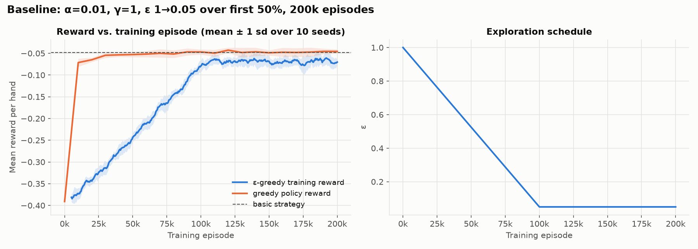
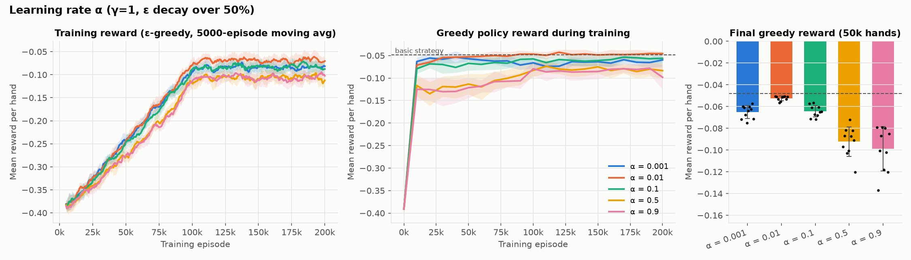
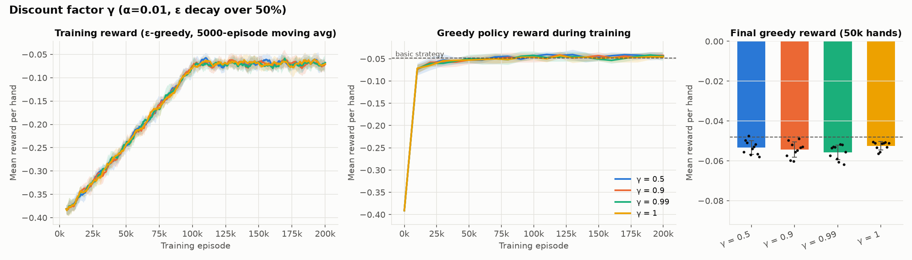
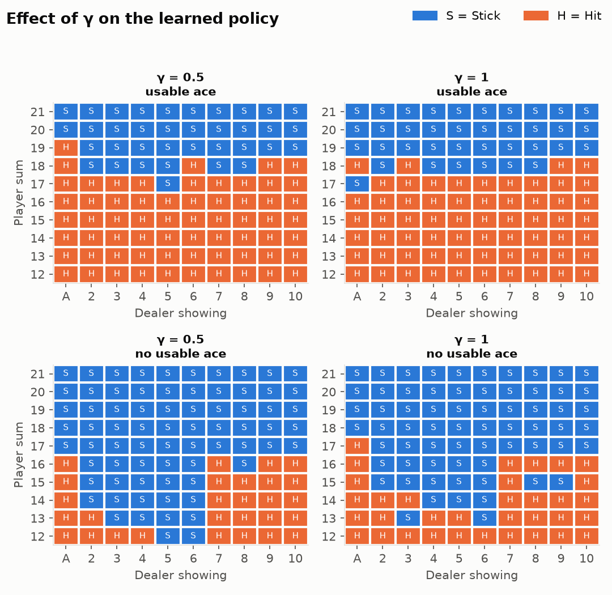
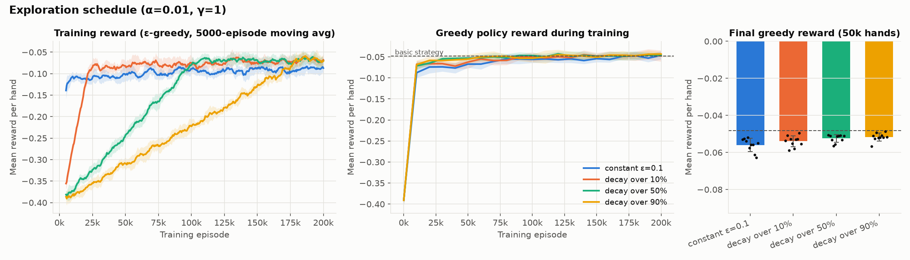
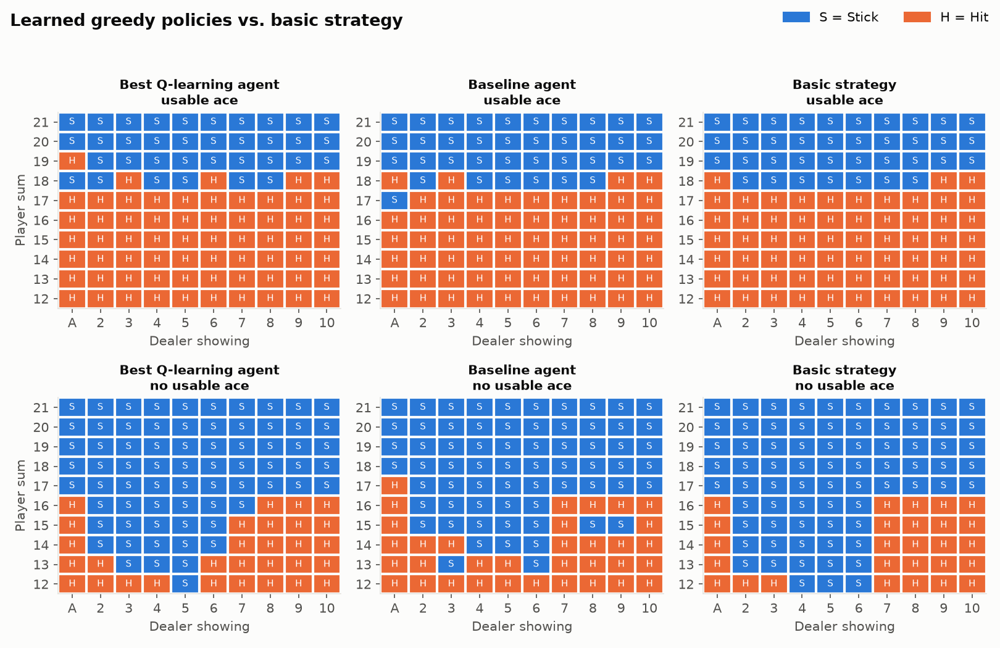
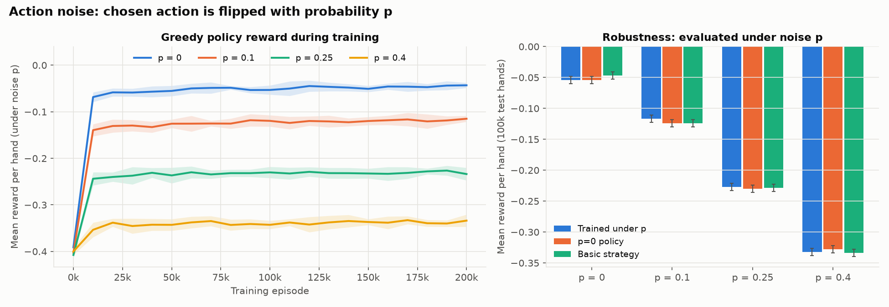

I used Gymnasium's Blackjack-v1 with its default settings, natural=False and
sab=False. This is the blackjack problem from Sutton & Barto, Example 5.1. The player tries to
beat the dealer by finishing closer to 21 without going over.
Tuple(Discrete(32), Discrete(11), Discrete(2)). The player sum is 4–21
when a decision is made and can reach 31 after a bust. The dealer card is 1–10, where 1 is an ace. Usable ace is
1 if the player holds an ace that can count as 11 without busting. Only about 280 of these states ever need a
decision.Discrete(2), where 0 means stick and 1 means hit. Doubling and splitting are not
allowed.The observation is already discrete and small, so no discretization is needed. The Q-table is a dictionary keyed by the observation tuple. Blackjack is already stochastic, so for part H I added a separate noise source on the agent's actions. Blackjack favors the house: even the best hit/stick policy, known as basic strategy, loses about 0.047 per hand under these rules. I use basic strategy (Sutton & Barto, Fig. 5.2) as the target, and I report how often the learned policy matches it over the 200 decision states with player sum 12–21.
The agent is written from scratch as the QLearningAgent class in qlearning.py. Only
the environment comes from Gymnasium.
defaultdict, so every new state starts at
[q_init, q_init], with q_init = 0 by default.explore=False gives the purely
greedy policy used for every evaluation.When a step ends the hand with a bust or a stick, the next state has value 0, so the target is just r. Truncation would bootstrap, but it never happens in Blackjack.
train(cfg, seed) resets the environment, sets ε from the schedule, plays the
hand while updating after every step, and records the episode reward. Every 10,000 episodes it also scores the
current greedy policy on a fixed set of 5,000 hands.q_init, and the noise level p are all fields of one Config dataclass. Each experiment
changes a single field, for example BASELINE.with_(alpha=0.5). The ε schedule decays linearly from
εstart to εend over the first f × N episodes and then stays at εend.evaluate() plays a fixed policy with no learning and no exploration. Every policy
is scored on the same seeded card sequence, a technique called common random numbers, which makes comparisons
between policies sharper.Every configuration is trained with 10 random seeds. Plots show the mean ± 1 standard deviation across seeds. A hand's reward has a standard deviation of about 0.95, so I used three separate sets of hands. Curves during training use 5,000 hands. Model selection uses 50,000 validation hands. The final numbers in part G use 100,000 test hands that were never used to make a choice. Each 95% confidence interval on 100,000 hands is ±0.006.
The baseline uses α = 0.01 and γ = 1.0, with Q initialized to 0 and 200,000 training episodes. ε decays linearly from 1.0 to 0.05 over the first 50% of training, which is 100k episodes, and then stays at 0.05. I chose γ = 1 because the task is episodic and all reward arrives at the end, so there is no reason to discount. I chose α = 0.01 because the returns are very noisy, and a small α averages over roughly 1/α ≈ 100 recent outcomes for each state–action pair.

The training reward, shown in blue, climbs from about −0.38 to about −0.07, almost exactly following the ε schedule. Early on most actions are random, and a random policy loses about 0.40 per hand. Once ε reaches 0.05 at episode 100k, the curve flattens. It stays below the greedy curve because 5% of actions are still random. The greedy policy, shown in orange, learns much faster than the training curve suggests. After only 10k episodes it is already at about −0.07, because the Q-values quickly learn the obvious rules: stick on 20–21 and hit on 12 and below. The rest of training slowly fixes the close-call states, which are mostly sums of 12–16 against different dealer cards. After 200k episodes the baseline scores a mean of −0.0524 on the validation hands, with a standard deviation of 0.0021 across seeds, against −0.0481 for basic strategy. It matches basic strategy in 94.2% of decision states.
I tested α ∈ {0.001, 0.01, 0.1, 0.5, 0.9} with every other setting at the baseline.

| α | greedy @10k | greedy @50k | final validation | sd across seeds | fluctuation late in training | matches basic |
|---|---|---|---|---|---|---|
| 0.001 | −0.063 | −0.057 | −0.0651 | 0.0060 | 0.011 | 90.0% |
| 0.01 | −0.071 | −0.053 | −0.0524 | 0.0021 | 0.007 | 94.2% |
| 0.1 | −0.079 | −0.067 | −0.0643 | 0.0053 | 0.012 | 87.5% |
| 0.5 | −0.117 | −0.113 | −0.0922 | 0.0136 | 0.015 | 81.5% |
| 0.9 | −0.125 | −0.121 | −0.0989 | 0.0204 | 0.016 | 81.2% |
The learning rate is the setting that matters most. With a fixed α, Q(s,a) is an exponentially weighted average of roughly the last 1/α targets. Blackjack outcomes are ±1 coin flips, so a large α makes Q(s,a) track the last few results rather than the expected value.
The training-reward curves in the left panel look similar for every α, because random exploration dominates that curve for the first half of training. The greedy-policy curve and the final bars separate the settings much more clearly.
I tested γ ∈ {0.5, 0.9, 0.99, 1.0} with the baseline α = 0.01 and ε schedule.


| γ | greedy @10k | greedy @50k | final validation | sd across seeds | matches basic |
|---|---|---|---|---|---|
| 0.5 | −0.074 | −0.053 | −0.0533 | 0.0035 | 94.8% |
| 0.9 | −0.074 | −0.053 | −0.0544 | 0.0038 | 93.4% |
| 0.99 | −0.072 | −0.050 | −0.0557 | 0.0037 | 94.2% |
| 1.0 | −0.071 | −0.053 | −0.0524 | 0.0021 | 94.2% |
In this environment γ has almost no measurable effect. All four final scores fall within about 0.003 of each other, which is about one seed-to-seed standard deviation. γ = 1 is nominally best and has the smallest spread. The reason is the structure of the game. Sticking ends the hand with an immediate reward, so Q(s, stick) does not depend on γ at all. Only Q(s, hit) = γ · E[maxa′ Q(s′,a′)] is discounted, and a hand lasts only 1–3 decisions, so a future reward is discounted at most once or twice. Weighting immediate versus future reward therefore only matters in borderline states. Even there the direction depends on the sign of the future value. Most blackjack states have negative value, so γ < 1 shrinks the expected future loss toward zero and makes hitting look slightly less bad. For good hands with positive value, it makes hitting look slightly worse. Figure 4 shows this: γ = 0.5 hits on 19 against an ace and on 18 against a 6, but sticks on 16 against an 8. All three are deviations from basic strategy in close states. The discounted objective is not the quantity being scored, which is the total reward per hand, so γ = 1 is the right choice, but in Blackjack the cost of a lower γ is small.
I compared four ε schedules with α = 0.01 and γ = 1: a constant ε = 0.1, and a linear decay from 1.0 to 0.05 over the first 10%, 50%, or 90% of the 200k episodes. The 50% schedule is the baseline.

| schedule | greedy @10k | greedy @50k | final validation | sd across seeds | matches basic |
|---|---|---|---|---|---|
| constant ε = 0.1 | −0.088 | −0.067 | −0.0559 | 0.0036 | 90.8% |
| decay over 10% | −0.068 | −0.062 | −0.0540 | 0.0029 | 92.5% |
| decay over 50% | −0.071 | −0.053 | −0.0524 | 0.0021 | 94.2% |
| decay over 90% | −0.068 | −0.055 | −0.0517 | 0.0022 | 94.8% |
The schedule mainly controls the cost of learning, which shows in the training reward in the left panel. With a constant ε = 0.1 the training reward is good from the start, at about −0.11 after a few thousand hands, but the agent never drops the 10% random actions, so it stays at about −0.09. The 10% decay reaches the ε = 0.05 level by about 20k episodes. The 50% and 90% schedules spend far more hands exploring and do not reach their plateau until 100k and 180k episodes. The greedy policy improves in the opposite order. More exploration means rare state–action pairs, such as hitting a soft 18 against a 9 or sticking on 13 against a 2, are tried often enough to estimate them correctly. Agreement with basic strategy rises steadily from 90.8% to 92.5%, 94.2%, and 94.8%, and the final reward improves from −0.056 to −0.052. Constant ε = 0.1 is the weakest, because it explores the least at the start, so the action that looks worse early on is rarely tried again. The gaps between the three decaying schedules are small compared with the seed-to-seed spread, but the trend is consistent: if only the final policy matters, explore longer.
I ranked all 11 configurations from parts C–F by their mean greedy reward over the 10 seeds on the 50k validation hands. Averaging over seeds avoids rewarding a single lucky run. The top configuration was α = 0.01, γ = 1, with ε decaying over 90% of 200k episodes, at −0.0517 on validation. It was followed by the baseline at −0.0524 and γ = 0.5 at −0.0533. The top three differ by less than the seed-to-seed standard deviation of about 0.002, so in practice they are tied. I took the best seed of the winning configuration, seed 8, as the final agent and evaluated it once on the 100k held-out test hands with exploration turned off. The best seed of the baseline and three reference policies were evaluated on the same test hands.

| policy | hands | mean reward ± 95% CI | win | draw | loss | bust | actions / hand | matches basic |
|---|---|---|---|---|---|---|---|---|
| best Q-learning agent | 100,000 | −0.0541 ± 0.0059 | 42.5% | 9.5% | 48.0% | 18.9% | 1.56 | 95.5% |
| baseline Q-learning agent | 100,000 | −0.0566 ± 0.0059 | 42.4% | 9.5% | 48.1% | 20.5% | 1.58 | 93.5% |
| basic strategy | 100,000 | −0.0468 ± 0.0059 | 43.0% | 9.3% | 47.7% | 18.1% | 1.54 | 100% |
| dealer rule: hit below 17 | 100,000 | −0.0804 ± 0.0058 | 40.7% | 10.6% | 48.7% | 28.1% | 1.62 | – |
| random | 100,000 | −0.3982 ± 0.0055 | 27.9% | 4.3% | 67.7% | 31.1% | 1.37 | – |
| best agent, first 30 hands only | 30 | −0.133 ± 0.348 | 40.0% | 6.7% | 53.3% | 30.0% | 1.57 | – |
The best agent averages −0.054 per hand. It wins 42.5% of hands, draws 9.5%, and busts in 18.9%, using 1.56 actions per hand on average. That is far better than random play at −0.398 and the naive rule of copying the dealer at −0.080. It is within 0.007 of basic strategy, the best possible hit/stick policy here, and matches it in 95.5% of the 200 decision states. Figure 6 shows the nine remaining differences are all in close states: hard 12 against a 4 or 6, hard 13 against a 2 or 6, hard 16 against a 7, and soft 18–19 against an ace, 3, or 6. In those states the two actions' values differ by only a few hundredths, and that is too small to resolve from the samples seen in 200k episodes. Compared with the baseline, the best agent is better by 0.0025 per hand, busts less at 18.9% against 20.5%, and matches basic strategy in 2 points more states, 95.5% against 93.5%. That is the same direction as the validation ranking, but it is inside the confidence interval, so the honest conclusion is that longer exploration gives at most a small gain. The last row of the table shows why many hands are needed. Thirty hands give a 95% interval of ±0.35, which cannot even separate the trained agent from a random policy, so the required evaluation of at least 30 episodes is done with 100,000 episodes.
An ActionNoise wrapper, built on gym.ActionWrapper, replaces the agent's chosen
action with the other action with probability p. With only two actions, replacing the action with a different
valid one means flipping it. The wrapper has its own seeded random number generator, so this uncertainty is
independent of the card draws and can be tuned with one parameter. I trained the best configuration from part G
under p ∈ {0, 0.10, 0.25, 0.40} with 10 seeds each, and evaluated each agent under its own noise level on the 100k
test hands. I also evaluated the p = 0 agent and basic strategy under each noise level, to test whether a policy
learned without noise still works.

| p | trained under p | p = 0 policy | basic strategy | val sd across seeds | bust, trained / p=0 policy | actions / hand | matches p=0 policy |
|---|---|---|---|---|---|---|---|
| 0 | −0.0541 | −0.0541 | −0.0468 | 0.0022 | 18.9% / 18.9% | 1.56 | 100% |
| 0.10 | −0.1164 | −0.1241 | −0.1239 | 0.0060 | 18.6% / 21.3% | 1.49 | 92.5% |
| 0.25 | −0.2270 | −0.2303 | −0.2285 | 0.0039 | 21.3% / 25.2% | 1.40 | 86.5% |
| 0.40 | −0.3321 | −0.3279 | −0.3336 | 0.0057 | 27.0% / 28.7% | 1.38 | 80.5% |
Noise lowers the reward roughly in proportion to p, from −0.054 to −0.116, −0.227, and −0.332. Most of this loss cannot be avoided by any policy. A flipped action on a hard 20 means hitting, which almost always busts. A flipped hit on 9 means standing on a hand that cannot win. At p = 0.4 the results approach the random policy at −0.40, because the intended action is carried out only 60% of the time, barely more than a coin flip.
All noise levels reach their plateau in about the same time, 10k–20k episodes as shown in Figure 7, so noise does not slow learning much. It does make learning less precise: the standard deviation across seeds rises from 0.0022 to 0.004–0.006. Rewards become noisier, and every transition now mixes the effects of two actions, so the Q-value gaps the agent must resolve shrink.
The policy trained without noise stays effective. Under every noise level it scores within about one
confidence interval of the agent trained under that noise, and as well as basic strategy. The largest gain from
training under noise is +0.008 at p = 0.10, and at p = 0.40 the p = 0 policy is actually slightly ahead, which is
within noise. The noise-trained policies do adapt in a sensible way. Under the same noise they stick earlier than
the p = 0 policy, taking 1.49 actions per hand against 1.52 at p = 0.10, 1.40 against 1.46 at p = 0.25, and 1.38
against 1.41 at p = 0.40. They also bust less, 18.6% against 21.3% at p = 0.10 and 21.3% against 25.2% at
p = 0.25. Each extra decision is another chance for a harmful flip, so ending the hand sooner is safer. They
disagree with the p = 0 policy in 7.5%, 13.5%, and 19.5% of states. As p grows, the policies also become
patchier, especially for soft hands, which are seen less often; results/H_noise_policies.png shows
this. Noise pulls the values of the two actions toward each other, so close states are harder to resolve. Because
those states are close calls, the disagreements barely change the expected reward. In short, action noise mainly
hurts performance directly. It changes the best policy only a little, and a policy learned without noise remains a
strong, robust choice.
The repository contains all code, the plots, results/tables.md with every number in this report,
and videos/blackjack_agent.mp4 with the best agent playing 12 hands, captioned with its action,
Q-values, and the outcome of each hand.